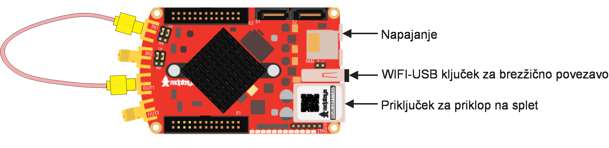
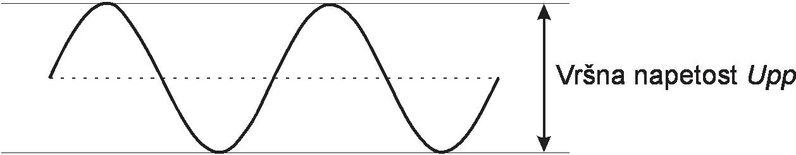
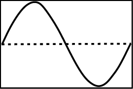
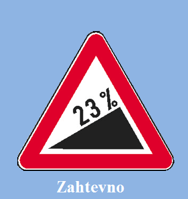
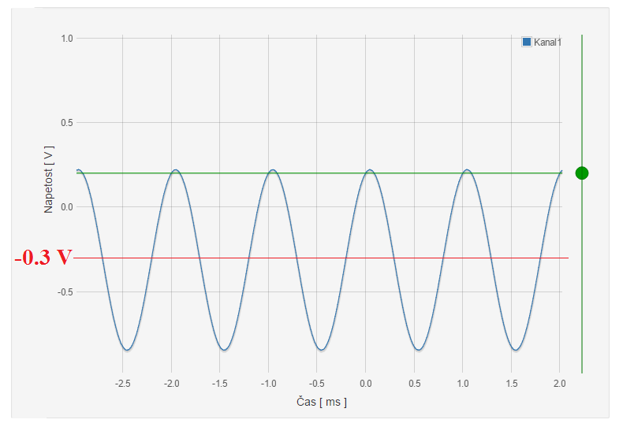
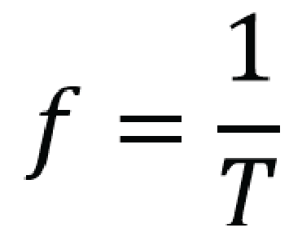

Zahtevnejši način izvajanja
Merilna shema
Osnovni priključki Red Pitaye so prikazani na spodnji sliki. Uporabite priložen koaksialen kabel s katerim povežete hitri izhod 1 s hitrim vhodom 1. 
ČE STE POVEZALI HITRI IZHOD 1 S HITRIM VHODOM 1, LAHKO NADALJUJETE S PRIKLJUČITVIJO RED PITAJE NA NAPAJANJE IN ZAGONOM APLIKACIJE.
Vzpostavite računalniško-merilno kartico Red Pitaya, kot je opisano na spletni strani Zagon_Red_Pitaye. Poženite aplikacijo Osciloskop in signalni generator in sledite navodilom Lekcije 1 in Lekcije 2. Če imate težave z zagonom Red Pitaje, vam bodo pomagala dodatna navodila oziroma odgovori na pogosta vprašanja.
Lekcija 1: Generiranje signalov
Aplikacijo Signalni generator in Osciloskop zaženete s klikom na ikono okna eEksperimenti
1. V oknu eEksperimenti izberite aplikacijo Signalni generator in Osciloskop.
Z izbiro zavihka Signalni generator v pojavnem oknu aplikacije se odpre spustno okno s kontrolami inštrumenta. Red Pitaya omogoča sočasno uporabo dveh signalnih generatorjev. Klik na potrditveno polje Kanal 1 vklopi ali izklopi funkcijski generator na hitrem izhodu 1. Klik na potrditveno polje Kanal 2 vklopi ali izklopi funkcijski generator na hitrem izhodu 2.
2. Omogočite funkcijski generator 1 na hitrem izhodu 1 s potrditvijo polja Kanal 1.
Za nastavitev parametrov generatorjev sta na voljo dve izbirni polji Oblika izhodnega signala / Način proženja ter tri vnosna polja Vršna napetost / Frekvenca / Enosmerna komponenta. Osnovne oblike signalov, ki so na voljo v izbirnem polju Oblika izhodnega signala, že poznate. Red Pitaya omogoča tudi ustvarjanje signalov poljubnih oblik. Funkcionalnost zaženete z gumbom Iz datoteke. Odpre se novo pojavno okno, kjer s pritiskom na gumb Izberi datoteko označite pot do datoteke z opisom signala. S potrditvijo gumba Naloži se opis signala prenese na merilno kartico.
3. V izbirnem polju Oblika izhodnega signala izberite sinusno obliko.
V vnosno polje Vršna napetost vpisujemo želeno vršno napetost generiranega signala. Vršna napetost je razlika med največjo in najmanjšo vrednostjo napetosti. 
4. V vnosno polje Vršna napetost vpišite vrednost »1«. Vpisano potrdite s klikom na potrditveni gumb. Vršna napetost 1 V pomeni, da bo najmanjša vrednost generiranega signala -0.5 V, največja pa +0.5 V. To velja le, če signal ne vsebuje enosmerne napetostne komponente. Pomni: Najvišja vršna vrednost napetosti, ki jo red Pitaya omogoča na izhodu, je 2 V.
V vnosno polje Frekvenca vpisujemo frekvenco signala. Frekvenca nam pove, kolikokrat na sekundo se ponovi osnovna oblika signala. Osnovna oblika sinusnega signala je prikazana na spodnji sliki:

5. V vnosno polje Frekvenca vpišite vrednost »1000«. Vpisano potrdite s klikom na potrditveni gumb. Frekvenca 1000 Hz pomeni, da se bo osnovna oblika sinusnega signala ponovila tisočkrat na sekundo.
V vnosno polje Enosmerna komponenta vpisujemo želeno vrednost enosmerne napetostne komponente. Ta se prišteje generiranemu signalu.

6. V vnosno polje Enosmerna komponenta vpišite vrednost »0«. Vpisano potrdite s klikom na potrditveni gumb.
V izbirnem polju Način proženja Izbirate med možnostmi Enkratno, Ponavljajoče in Proženje z zunanjim signalom. Izbira vpliva na način generiranja signala. Izbira Enkratnega proženja povzroči, da se ob pritisku na gumb generira signal osnovne oblike, nakar se generator ustavi. Ponavljajoče proženje generira ponavljajoč, periodičen signal. Generiranje signala ene periode lahko prožimo tudi z zunanjim signalom, ki ga pripeljemo na Red Pitayo.
7. V izbirnem polju izberite možnost Ponavljajoče, s čimer sprožite generiranje periodičnega signala na hitrem vhodu 1.
Če vas begajo številne funkcionalnosti inštrumenta, lahko še vedno preidete na enostaven način. Tam opišemo le osnovne funkcije inštrumentov in podamo poenostavljeno razlago.
Lekcija 2: Uporaba osciloskopa
Generiran signal se boste naučili prikazati na osciloskopu in odčitati njegove parametre.
Za hiter prikaz signala je na voljo zavihek Samodejna nastavitev merilnih območij. Z Klik na zavihek ponudi dodatne možnosti v obliki spustnega seznama. S klikom na Napetostnega in časovnega bo aplikacija samodejno prilagodila napetostno in časovno merilno območje in umirila prikaz signala. Velja opozoriti, da samodejna prilagoditev ni vedno uspešna. Če želite, da program prilagodi le napetostno merilno območje, časovnega pa ne, izberite opcijo Časovnega. S klikom na Ponastavi se nastavita privzeti merilni območji (časovno merilno območje med 0 in 130 µs in napetostno merilno območje +/-1 V za LV nastavitev ali +/-20 V za HV nastavitev ojačenja). S pritiskom na preklopni gumb Kanal 1 omogočimo ali onemogočimo prikaz signala na hitrem vhodu 1. S pritiskom na preklopni gumb Kanal 2 omogočimo ali onemogočimo prikaz signala na hitrem vhodu 2.
1. Onemogočite prikaz signala na hitrem vhodu 2.
 Z nastavitvijo proženja dosežemo, da se osnovna oblika ponavljajočega signala riše ena čez drugo, kar ustvari videz mirujoče slike. To nam olajša opazovanje signala in odčitavanje njegovih parametrov. Začetek risanja osnovne oblike določimo z nivojem praga proženja. Prag proženja vpisujemo v vnosno polje Prag proženja, nastavljamo z zelenim drsnikom ali pa na prožilni vhod Red Pitaye pripeljemo zunanji prožilni signal v obliki enosmerne napetosti. V izbirnem polju izberemo izvor prožilnega signala. Izberemo ga glede na uporabljen kanal osciloskopa ali pa izberemo možnost Zunanji izvor za proženje z zunanjim signalom.
2. V izbirnem polju Izvor prožilnega signala izberite Kanal 1. Način proženja nastavite na Običajno. V vnosno polje Prag proženja vpišite »0.2«. S tem ste nastavili prag proženja na 0,2 V. Spreminjajte prag proženja z zelenim drsnikom, ki ga najdete na desni strani grafičnega okna in opazujte sliko signala.
Merilni območji lahko prilagajamo z vrtljivim kolescem računalniške miške ali s kontrolnima gumboma in .
3. Kazalec miške postavite na graf. Opazujte, kako se prilagajata merilni območji, ko sučete kolesce na miški. Raziščite funkcionalnost gumba .
Za ročno nastavitev merilnih območij je na voljo spustno kontrolno okno, ki ga odpremo s klikom na zavihek Ročna nastavitev merilnih območij. Tu nastavimo širino, z opcijo Premik pa premik merilnih območij.
4. Širino časovnega merilnega območja nastavite na 5 ms, napetostno pa na 2V. Z gumbi za premik merilnih območij uredite prikaz signala na zaslonu. To lahko dosežete tudi z vklopom funkcije premika. Kliknite na gumb . Z miškinim kazalcem se postavite na sliko signala, pritisnite levo tipko in jo zadržite. Premik miške premika merilni območji.
S klikom na zavihek Prikaz signalnih parametrov se odpre spustno okno z izračunanimi parametri signalov na kanalih 1 in 2. Pojme Najmanjša napetost, Največja napetost, Vršna napetost in Frekvenca že poznate. Nova sta pojma Perioda in Povprečna napetost. Perioda je čas v katerem se časovni potek napetosti periodičnega signala ponovi. Povprečna napetost je določena s površino pod krivuljo signala v eni periodi deljena s periodo.
5. S pomočjo zavihka Prikaz signalnih parametrov odčitajte parametre nastavljenega signala.
Pod zavihkom Merilni sondi so nastavitve za uparjanje merilnih sond.
Pri merjenju enosmernih signalov in izmeničnih signalov nizkih frekvenc predstavljajo merilne sonde brez slabljenja visoko upornost. Pri merjenju signalov visokih frekvenc
kapacitivnost koaksialnega kabla bremeni izvor signala. Da se izognemo kapacitivnemu bremenu, uporabljamo sondo s slabljenjem, kjer se vhodna impedanca zviša za enak faktor
kot znaša slabljenje signala (upornost se poveča, kapacitivnost se zmanjša).
Faktor slabljenja nastavimo s preklopnim drsnim stikalom, ki ga najdemo na merilnih sondah. Enak faktor nastavimo v izbirnem polju Faktor slabljenja v spustnem oknu zavihka Merilni sondi.
Za merjenje signalov vršne napetosti do 2 V preklopimo stikali vhodov Red Pitaye v lego LV (nizka napetost – Low Voltage). Stikali najdemo na vezju ob priključkih za hitri vhod 1 in
hitri vhod 2. Za merjenje signalov vršne napetosti do 40 V preklopimo stikali vhodov Red pitaye v lego HV (nizka visoka napetost – High Voltage). Enako vrednost nastavimo v izbirnem polju Nastavitve ojačenja.
Eksperiment
V zavihku Vzorčni signali so štirje gumbi. S klikom na gumb sprožite generiranje prednastavljenega signala. Potrdite polje Kanal 1, s čimer omogočite hitri izhod 1 Red Pitaje.
V zahtevnejšem načinu izvajanja funkciji Samodejnih nastavitev merilnih območij in Prikaz signalnih parametrov nista na voljo, zato boste parametre signalov odčitali iz grafičnega prikaza. Če vam ne uspe, lahko še vedno izberete lažji način izvajanja link.
Kako določiti enosmerno komponento signala?
Enosmerno komponento signala določite z iskanjem povprečne vrednosti signala.

Kako določiti frekvenco signala?
Frekvenco signala boste izračunali. Iz slike signala boste razbrali čas, v katerem se osnovna oblika signala ponovi. Temu času rečemo tudi perioda in ter ga označimo s T. Frekvenco signala izračunate po enačbi: 

prof. dr. Dejan Križaj,
dejan.krizaj@fe.uni-lj.si
Vodja projekta, idejna zasnova, eksperiment Sončna celica